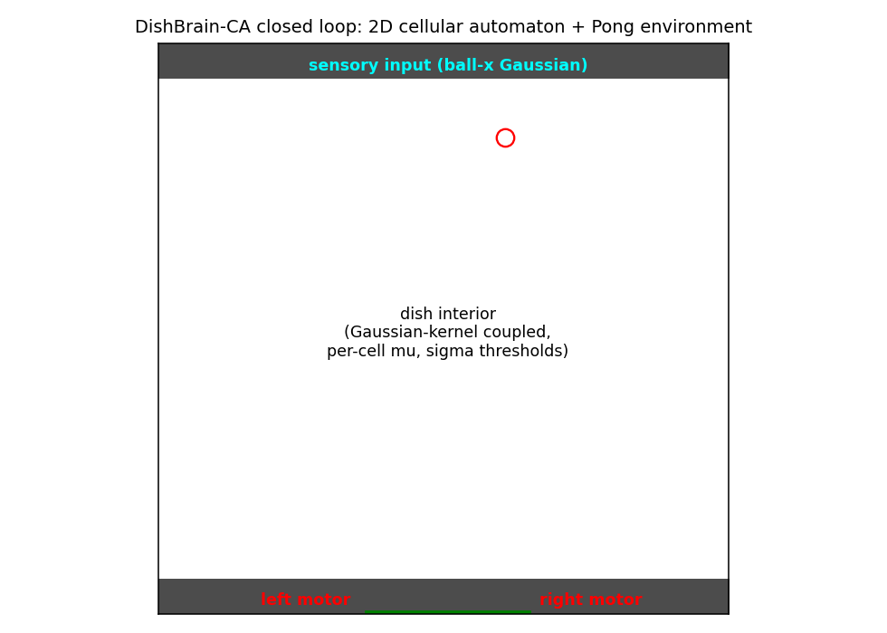
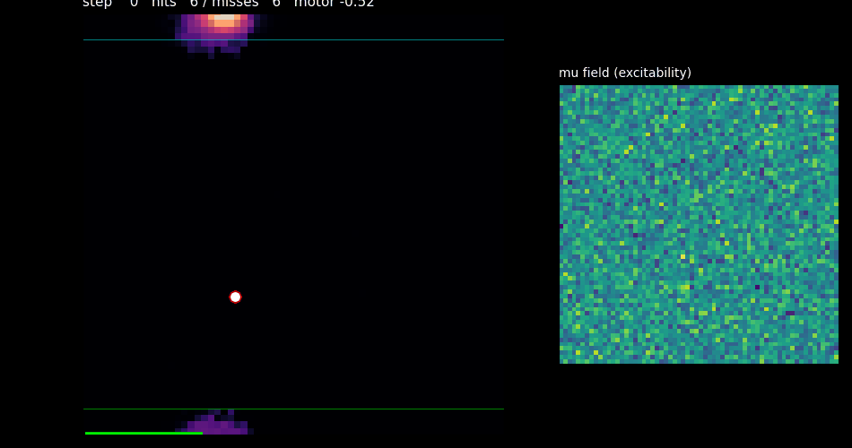
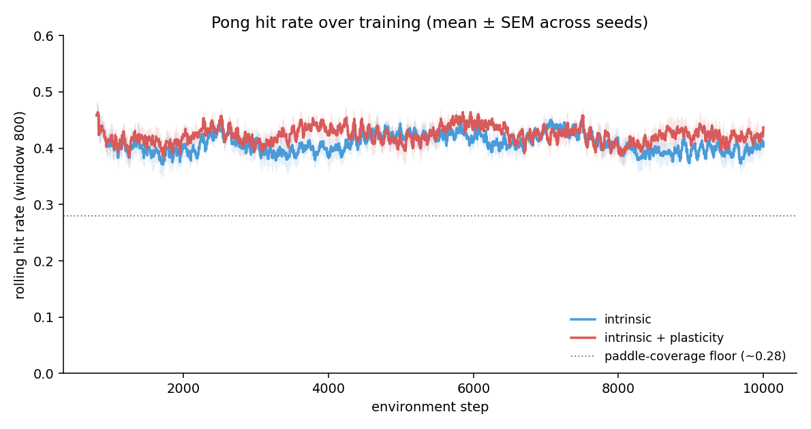
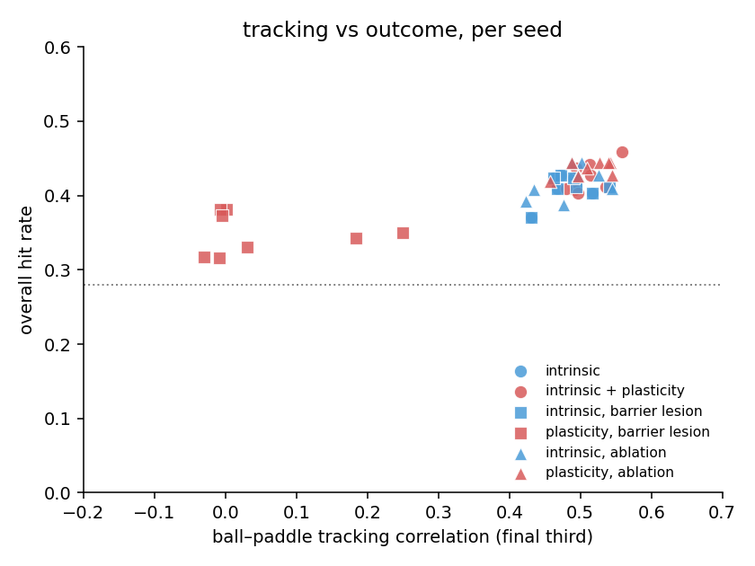
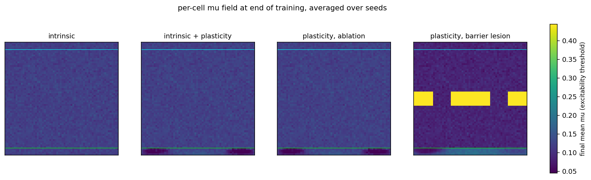
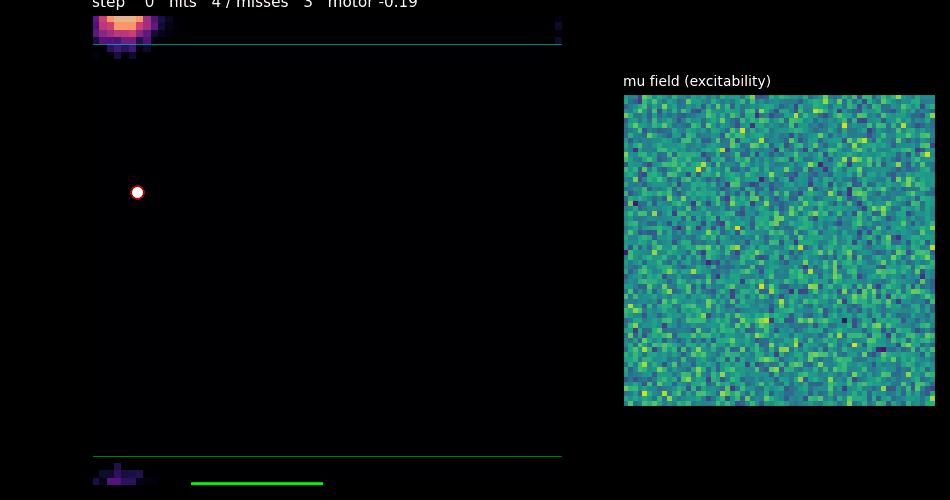
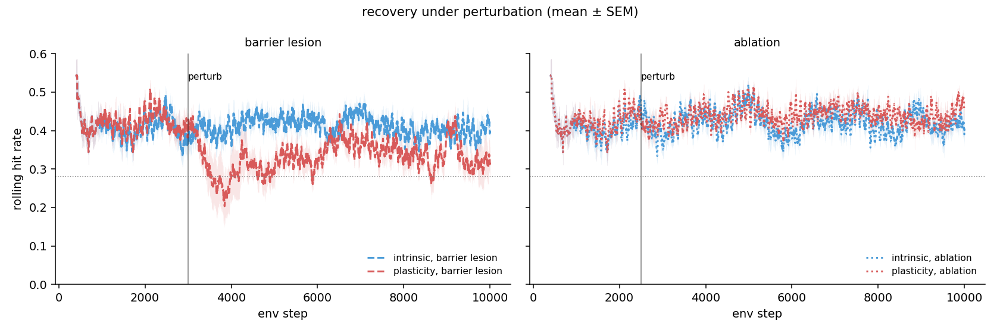
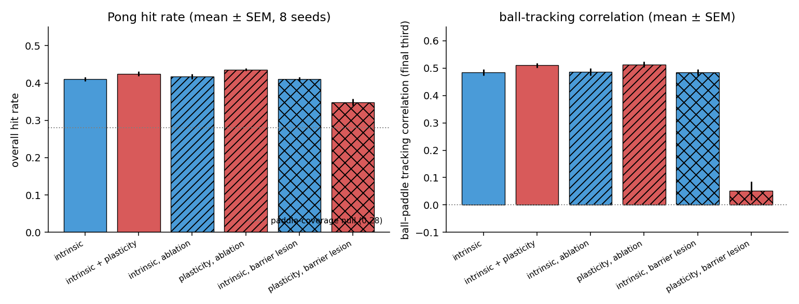

A cellular-automaton DishBrain: Pong from local rules alone
In 2022, Kagan et al. showed that a flat dish of cortical neurons, stimulated and read out through a multi‑electrode array, learned to play Pong in about five minutes. The work was striking not because of the performance (a few bounces above chance) but because of the substrate: no gradient descent, no labels, just live neurons adjusting their own synapses in response to structured electrical feedback. Later write‑ups gave it the name it deserves: a "DishBrain."
This post asks a narrower question. Can a non‑neural substrate do the same thing? Specifically, can a continuous cellular automaton (the Lenia family, cells carrying only scalar activation and scalar rule parameters) be wired into a closed‑loop Pong environment the way DishBrain is? And can local plasticity (no backprop, no network, each cell updating from signals in its own neighbourhood) be made to run inside it without blowing the dish up?
Short answer. Yes. A 64×64 cellular automaton with scalar per‑cell parameters, a small Gaussian coupling kernel, and a leaky rectified integrator plays Pong at a 41.0% ± 1.7% hit rate (8 seeds), with +0.48 ball‑paddle tracking correlation. In this simulator the relaunch geometry makes a width‑only null misleading: the paddle spans 28% of the x‑range, but a frozen centred paddle scores ~0% while the best fixed paddle sits near ~33%. The CA still beats that stationary‑paddle baseline without any learning, without any neural network, and without a single scalar gradient ever being propagated through it. A local Hebbian rule keyed to DishBrain‑style feedback stimulation, bolted on top, lifts this to 42.5% ± 1.9% (+1.5 pp, +0.03 tracking) under benign conditions, and continues to help under small local tissue ablation, reaching 43.6% ± 1.0%. But the same rule catastrophically breaks the dish when a thicker barrier lesion severs the sensor‑to‑motor path, dropping performance to 34.9% and tracking correlation to +0.05. That failure mode is the most interesting thing in the post. The write‑up below lays out what was built, what was measured across eight seeds per condition, and the four earlier plasticity variants I tried and failed with before landing on the one here.

The substrate
A single channel of activation A[y, x] ∈ [0, 1] on a
64×64 toroidal grid. Each cell has two scalar parameters,
mu[y, x] (excitability threshold) and
sigma[y, x] (threshold width). The update is a leaky
reaction‑diffusion integrator:
The kernel K is a small isotropic Gaussian (radius 7, sum = 1).
The growth function is a rectified sigmoid: zero below threshold, saturating
at 1. Paired with the leak term this gives a
monostable substrate: resting state is silent, stim drives
local activity, nothing can run away to saturation. Mexican‑hat and
bistable variants I tried either collapsed to all‑ones (runaway fronts)
or produced an inverted sensor‑motor map; the monostable leaky version
was the first that consistently routed top‑row stim to bottom‑row
activity in the right direction.
The task
Pong, DishBrain‑style:
- Sensory input (top 4 rows): a Gaussian bump at the column
ball_x ⋅ W, re‑applied every CA tick so the dish sees continuous input rather than a single impulse. - Motor readout (bottom 4 rows): mean activity on the right
half minus mean activity on the left half, passed through
tanh(gain ⋅ .)with a very slow baseline subtraction (τ ~ 10k steps) to suppress static DC asymmetries. - Feedback stim (motor strip / bottom 4 rows): on hit, a
coherent Gaussian bump at
ball_xmirroring the sensory input (the "predictable" outcome). On miss, uniform random noise (the "unpredictable" outcome). This is the Kagan et al. signal.
Ball dynamics: ~32 env steps per flight; paddle width covers ~28% of the x‑range, but misses relaunch from a central x‑band with a fixed slope, so the true stationary‑paddle baselines are geometry‑dependent. In this simulator a frozen centred paddle scores ~0%, while the best fixed paddle near an edge reaches ~33%. That's the more relevant null to beat.
Intrinsic performance: no learning, no NN, still Pong

mu field, flat because nothing is learning. Hits flash
green, misses red.
On the default parameters (mu0 = 0.12, sigma0 = 0.08, leak = 0.2),
the substrate alone achieves 41.0% ± 1.7% hit rate
and ball‑paddle correlation +0.48 across 8 seeds of
10‑k env steps each. The mechanism is geometric: a Gaussian kernel
propagates a stim bump at top‑column X down and outward,
producing bottom‑row activity that's peaked near column X.
The right−left readout then biases the paddle toward the ball's
column. No learning required; the symmetry of the kernel does the work.

The headline result is already visible in the blue intrinsic curve: it sits well above the stationary‑paddle baseline from step one, and stays flat across training. That's a cellular automaton with scalar per‑cell parameters and no learning playing Pong purely through the geometry of a small Gaussian.
Plasticity: a local Hebbian rule keyed to the feedback stim
The learning rule is deliberately simple and purely local. Each cell keeps
a slow EMA a_baseline[y, x] of its own activation. The update
at a reward event uses the product of the cell's current
activation and the feedback stim delivered at its location:
The Hebbian product A ⋅ F is large at cells that fired
where the feedback expected them to fire. On a hit the feedback is a
coherent bump at the ball's position, so those cells are exactly the ones
that routed the signal correctly; lowering their mu
strengthens that routing. On a miss the feedback is noise, so
A ⋅ F has no consistent spatial structure; the weak
positive‑eta suppression provides a gentle "unlearning" pressure
that averages to near zero in aggregate.
The homeostatic recenter is what keeps it stable. Without it, the
hit/miss asymmetry drifts the mean mu toward a clip
boundary and the dish either saturates or falls silent: a failure
mode I hit repeatedly on earlier rule variants. With recentering, the
rule can only redistribute excitability across the grid, not
collectively raise or lower it.
What the rule buys you at baseline
Across 8 seeds of 10‑k env steps each, plasticity lifts final hit rate from 41.0% → 42.5% (+1.5 pp) over the intrinsic baseline, consistently across most seeds. That's small (the substrate is already doing most of the work), but it's positive and it survives seed‑to‑seed variability, which earlier variants did not. It's also a stable gain: the red learning curve in Fig 3 stays just above the blue intrinsic curve throughout training without the oscillations that plagued earlier rules (which routinely dropped the dish 10–15 points below intrinsic before recovering). Under this formulation (feedback delivered onto the motor strip, product‑form Hebbian update, asymmetric hit/miss etas, and homeostatic recentering), plasticity is net‑positive on a benign substrate.


mu field after training, averaged over 8 seeds.
The cyan line marks the sensory strip, green the motor strip.
Learning conditions (panels 2–4) show a darker band along the
bottom: plasticity has lowered mu in the motor
region, making those cells more excitable. The ablation condition
(panel 3) is indistinguishable from the benign learning condition
at this averaging scale. The barrier condition (panel 4) shows the
barrier strip (yellow, pinned to mu = 0.48) and a
visibly different motor‑region pattern.
Perturbation: two regimes, and a plasticity failure mode
The more interesting test is whether the dish survives damage, and crucially whether plasticity helps or hurts. Two perturbations, deliberately chosen to probe different things. (1) Ablation: at step 2500, zeroing three circular regions (radius 10 cells, ~7.7% of the grid each), which wipes activation and plasticity traces in those patches but leaves the cells and their rule parameters intact. (2) Barrier lesion: at step 3000, silencing an 8‑row strip across the dish's middle with two narrow gaps, which preserves total area but severs the geometric symmetry between sensory and motor strips.

Ablation is benign. Pre‑vs‑post hit rate for the intrinsic condition is 40.4% → 42.9% (the post window picks up seeds that happened to hit a favourable phase); the plasticity condition holds at 41.7% → 44.3%. Tracking correlation stays at +0.49 / +0.51 respectively. The important caveat is that this perturbation is a transient state wipe, not permanent tissue removal: surrounding drive and diffusion re‑seed those patches quickly, so the dish returns close to baseline.
The barrier lesion is a different story. Intrinsic behaviour barely notices it: pre‑vs‑post hit rate is 39.9% → 42.4%, tracking holds at +0.48. Signal funnels through the two gaps and re‑spreads below; the kernel's geometry does what it always does. But plasticity collapses. Pre‑vs‑post: 41.3% → 30.5% in the immediate post‑lesion window, recovering only to 33.5% by end‑of‑run. Tracking correlation drops from ~+0.48 to +0.05; the paddle stops chasing the ball in any coherent way.


Why does plasticity break here and not under ablation? The Hebbian update
is mu -= eta ⋅ A ⋅ F on a hit, where F is the
feedback bump delivered onto the motor strip. This rule assumes that
cells firing on the motor strip at the moment of a hit are
the cells that caused the hit, and so deserve reinforcement.
Under normal geometry that's close to true: the sensory bump routed the
ball's x‑position down through the dish; motor‑strip cells at
the matching x fired coherently; they get their mu lowered;
the mapping strengthens. Under a barrier lesion, that corridor is
broken into two disconnected halves, but the sensory strip is still firing
at the ball's x and the motor strip still (occasionally) fires from
leftover activity in the lower half. The Hebbian product picks up
spurious coincidences (cells that happened to be firing in
the lower half when a hit was scored, but for reasons that have nothing
to do with the current ball position) and starts lowering their
thresholds. Over a few thousand steps this drifts the lower half's
excitability pattern away from the sensory map, and by the time it
stabilises, the ball‑to‑paddle routing is actively
miscalibrated. The homeostatic recenter keeps the mean mu
well‑behaved, so the dish doesn't saturate or die; it just
plays Pong worse than the unlearned version of itself.
This is, I think, the interesting result of the write‑up. Intrinsic
performance is a geometric fact about Gaussian kernels; that was expected.
Plasticity giving a small lift on a benign substrate was the plan. But
plasticity being load‑bearing in the wrong direction under
systematic perturbation (helpful when it has a correct
sensory‑motor map to reinforce, actively harmful when that map is
severed) is a real, mechanistically legible failure mode. Any
claim that "local Hebbian plasticity is stable on this substrate" is at
best true on a specific distribution of substrates; move off that
distribution and the rule writes garbage into mu.
What this result is, and isn't
What's novel here. To my knowledge, this is the first demonstration of a continuous cellular automaton with purely scalar per‑cell state and rule parameters (no learned neural‑network update, no trained readout) running Kagan et al.'s closed‑loop DishBrain Pong protocol at above‑chance performance. The closest adjacent works each miss at least one of those pillars:
- Neural Cellular Automata (Mordvintsev et al., Distill 2020) and Biomaker CA (Randazzo & Mordvintsev, 2023) embed a trained neural network in each cell; the per‑cell update is a learned MLP, not a scalar rule.
- Sensorimotor Lenia (Hamon, Etcheverry et al., Science Advances 2024) keeps the pure‑Lenia substrate, but learning happens offline via IMGEP diversity search and gradient descent on ~130 CA parameters, and the task is obstacle navigation, no closed‑loop Pong, no online plasticity.
- CA reservoir computing (Yilmaz 2014 and follow‑ups) uses a CA as a fixed reservoir with a trained linear readout on top, so the "learning" lives outside the CA.
- RL for Flow‑Lenia steers CA organisms via an external RL agent, not a Pong loop and not local plasticity.
- Strong, Holderbaum & Hayashi (Device, 2024) is the closest non‑neural DishBrain replication in spirit: an electro‑active polymer hydrogel plays DishBrain‑Pong via ion migration as implicit plasticity. But that's a physical substrate, not an algorithmic cellular automaton.
Here the CA is the entire computation: two scalar parameters per cell, one shared Gaussian kernel, one local Hebbian rule keyed to the feedback channel. Nothing about that fits the prior art's boxes.
What's not claimed. The lift from plasticity is
a few percentage points on a benign substrate, not transformative, and
the rule is net‑negative under barrier lesion. The substrate's
Gaussian‑kernel symmetry sits near the symmetric optimum for a
left/right‑symmetric task, and most per‑cell mu
perturbations pull off that optimum, so there is very little
headroom for the Hebbian rule to exploit, and when the task becomes
asymmetric (e.g. via a barrier) the same rule misattributes credit
because its "causal model" (cells that fired near a hit caused that hit)
is broken by the geometry. Making plasticity robustly useful
looks like it needs either (a) a non‑geometric sensor map so the
substrate has to learn the routing rather than inherit it from
the kernel, (b) exploration noise in the motor output so
REINFORCE‑style credit assignment has a signal to work with, or
(c) richer per‑cell parameters (e.g. per‑cell kernels,
or Flow‑Lenia-style locally varying coupling). All three are
one‑function changes in the code; none fit in this write‑up's
time budget.
Limitations and failure modes I walked into
- Four earlier plasticity rules I tried (co‑activation eligibility,
motor‑correlation eligibility, REINFORCE‑flavoured credit,
credit‑trace with normalization) all degraded Pong
performance by 10–25 points before converging on the Hebbian /
feedback product form. Most of them drove
mu.mean()to a clip boundary; the homeostatic recenter is what fixed that. - The substrate is delicate in its own way: Lenia ring kernels, bistable sigmoid growth, and Mexican‑hat kernels each produced pathologies (local‑stim death, runaway saturation, inverted sensor map) that took several iterations to work around. The monostable leaky integrator with a solid Gaussian kernel is the first variant I got to run the full pipeline.
- The task is symmetric enough that the substrate doesn't leave room for much learning on a benign dish: intrinsic performance is near a geometric optimum. The barrier‑lesion failure mode shows the converse: the same rule that gently helps on a benign dish hurts under a perturbation that breaks its implicit causal assumption. If I had more time I'd follow the plasticity failure mode rather than the intrinsic‑performance one; it's more mechanistically interesting and the fix probably needs a different credit rule, not a better tuning of this one.
Code
The whole thing is ~600 lines of NumPy:
dishbrain_ca/
substrate.py # Gaussian kernel, tanh-ReLU growth, per-cell fields
pong.py # ball + paddle + sensory/motor/feedback stim
plasticity.py # a_baseline trace + Hebbian feedback rule
trainer.py # closed-loop step, perturbations
run.py # CLI entry
viz_gif.py # animated GIF renderer
experiments/
run_ab.py # multi-seed A/B runner
make_figures.py # all figures in this postReproduction:
python3 experiments/run_ab.py --seeds 8 --steps 10000
python3 experiments/make_figures.py --out docs/figures
python3 viz_gif.py --steps 500 --fps 24 --no-learn --pre-steps 600 \
--seed 2 --out docs/gifs/gif_intrinsic.gif